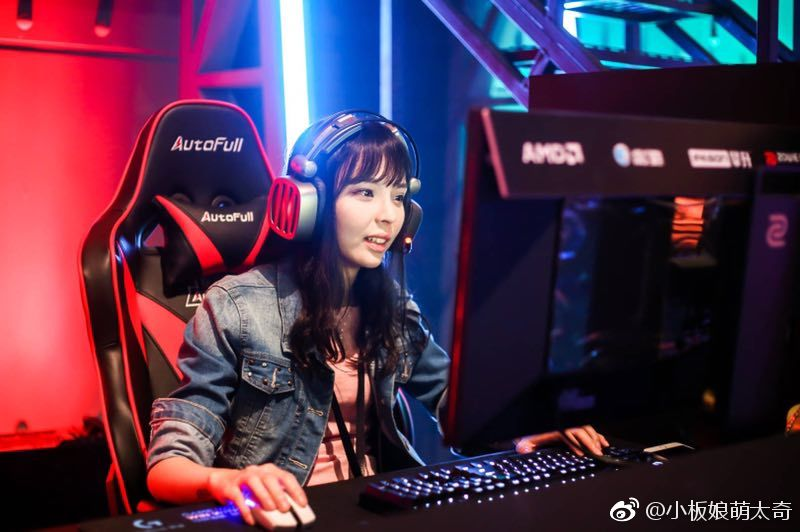
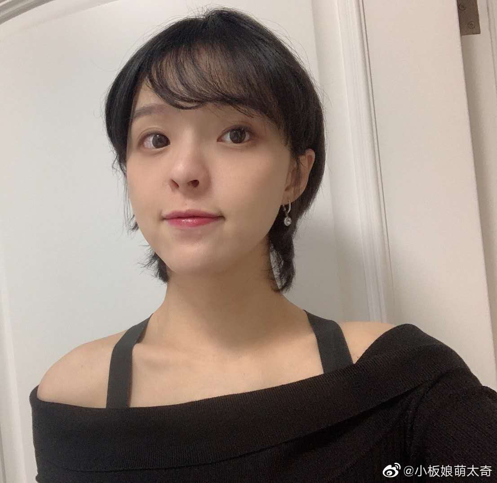

很多游戏中的高手玩家大多都是男性，很少有女性大神玩家的出现，无论是竞技性比较强的moba游戏，还是像是炉石这种比较依靠经验和智商判断的游戏，女性大神玩家确实是不多见。而萌太奇就是为数不多中的一个，这位玩家是炉石高手玩家中知名度最高的女性选手，也是一位职业选手。
板娘开始还没在斗鱼直播，在YY直播，那时候去看只有三四百人，看了几次没超过一千的，以那时候主要是在各种节目看到板娘的身影，比如炉石咖啡厅、中日挑战赛等，那时候弹幕就纷纷对这个安静的妹子产生了兴趣。，之前又一直以口罩遮面，故称“口罩娘”，参加各种比赛都是带着口罩现身，这让广大炉石网友非常不淡定，一时间网上各种帖子猜测萌太奇的真身。
后来在CJ上被由新科中韩大师赛冠军，人称世界第一萨的魔法之风击败才第一次露出真容。从此直播画风突变，从原来的安安静静的文艺妹子变成了一个女神经
板娘本身实力毫不逊色于一些男选手们，在NEL秋季赛中也代表YM拿到冠军，成为广大炉石传说女性玩家的表率。

《电子竞技在中国》（节选）
板娘她就像一个邻家女孩儿，总在不经意间流露出一种可爱的气质，观众们在她的直播间能更多的感受到真诚的友谊，和主播的精神交流，而不是穿着暴露的，没有情感的推销员。
起小点评价板娘：线下经常交流，她是我见过直播和生活都如同一人的逗比妹子。（大部分主播直播中的性格和生活中的性格都差距很大）聪明真实逗比，是一个接地气的主播。
板娘称号来源：在直播的时候会在直播间挂上出手瓜子4元、矿泉水5元这样的文字，自称是萌太奇零食铺，久而久之大家就叫它老板娘。后因为板娘的颈部与腹部之间直观效果过于平坦，于是就渐渐被人称作为“板娘”了。
人美胸大歌甜

和安德罗妮在一起后智商直降至70，直播中各种失误，怀孕后情况更甚。一孕傻三年
炉石第一歌姬：曾因一首普通的disco红遍炉石圈大江南北，被江湖人封为“天籁神曲”，妄图窃听的凡人都得到了应有的惩罚，其“动听程度”甚至具有一定影响现实的能力，在使用凡间的器具播放此曲时，器具有一定几率由于无法承受天籁的威力而损坏如毕游侠的声卡，所以各位不要为了满足自己的好奇心而造成的不必要的财产损失。
) 《沙漠骆驼》
《沙漠骆驼》